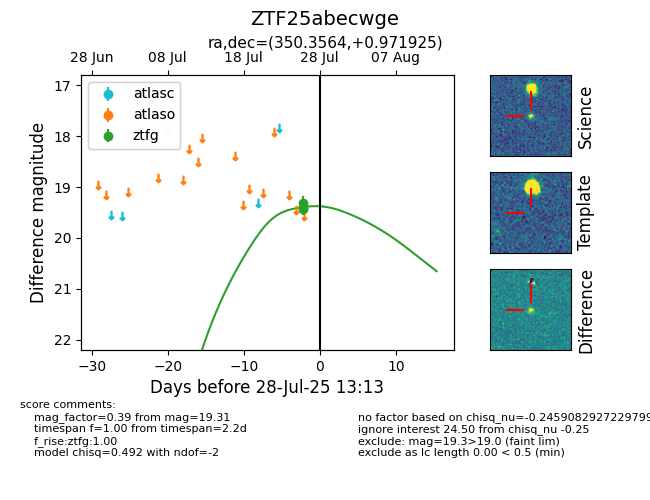

Target ZTF25abecwge at 2025-07-28 13:13, see:
FINK: fink-portal.org/ZTF25abecwge
Lasair: lasair-ztf.lsst.ac.uk/objects/ZTF25abecwge
ALeRCE: alerce.online/object/ZTF25abecwge
alt names
ZTF25abecwge (ztf,fink)
coordinates:
equatorial (ra, dec) = (350.3564,+0.97193)
galactic (l, b) = (81.6780,-54.52516)
photometry
last ztfg=19.31
3 ztfg detections
